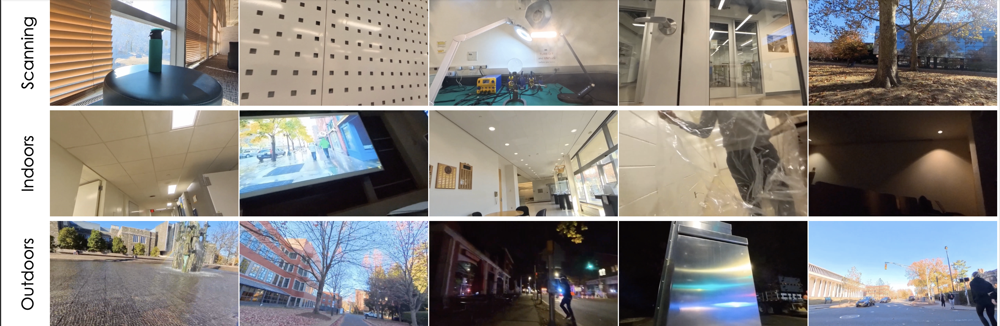
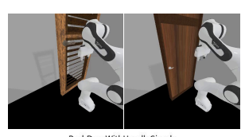
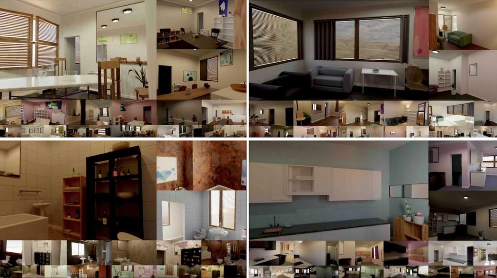
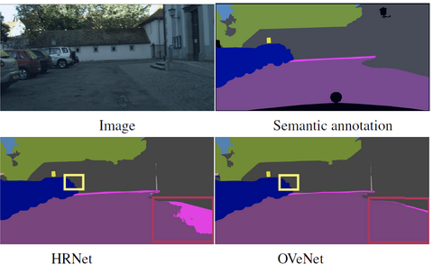

|
Stamatis Alexandropoulos I am a 3rd year Ph.D student in Computer Science at Princeton University, working with Prof. Jia Deng as part of the Princeton Vision & Learning Lab. Previously, I completed with highest honors (Valedictorian) my Diploma M.Eng Degree at the School of Electrical and Computer Engineering of the National Technical University of Athens, where I worked with Prof. Petros Maragos and Dr. Christos Sakaridis (Computer Vision Lab, ETH Zurich). My research interests lie in the interface of Machine Learning, Computer Vision, Computer Graphics as well as Robotics. Consequently, I would like to delve into the above areas and develop artificially intelligent systems able to make an impact on humanity and reason visual world. |

|
News• [Sep 2025] We got a paper accepted in NeurIPS 2025: "InFlux: A Benchmark for Self-Calibration of Dynamic Intrinsics of Video Cameras" • [Jun 2025] We got a paper accepted in ICCV 2025: "Princeton365: A Diverse Dataset with Accurate Camera Pose" • [May 2025] We got a paper in arxiv: "Infinigen-Sim: Procedural Generation of Articulated Simulation Assets" • [Mar 2024] We got a paper accepted in CVPR 2024: "Infinigen Indoors: Photorealistic Indoor Scenes using Procedural Generation" • [Oct 2023] We got a paper accepted in IEEE/CVF WACV 2024: "OVeNet: Offset Vector Network for Semantic Segmentation" • [Sep 2023] I have been awarded the Onassis Foundation Scholarship for my graduate studies! • [Aug 2023] I have been awarded the Princeton Stanley J. Seeger Hellenic Studies Award • [Aug 2023] I am starting my Ph.D at Princeton in Fall 2023, advised by Professor Jia Deng! • [June 2023] I have been awarded the Tzafestas, Chrisovergi and Kondouli Honorary Awards for graduating 1st in class among all students of the Department of ECE (Valedictorian) and across all Departments of National Technical University of Athens, respectively. • [June 2023] I have been awarded the Kontaxis Honors for graduating 1st in Computer Science major |
|  |
Princeton365: A Diverse Dataset with Accurate Camera Pose
Stamatis Alexandropoulos *, Karhan Kayan*, Rishabh Jain, Yiming Zuo, Erich Liang, Jia Deng, (*equal contribution) Internation Conference of Computer Vision (ICCV), 2025 [Website] [Pdf] [Code] We introduce Princeton365, a large-scale diverse dataset of 365 videos with accurate camera pose. |

|
Princeton365: A Diverse Dataset with Accurate Camera Pose
Erich Liang, Roma Bhattacharjee*, Sreemanti Dey*, Rafael Moschopoulos, Caitlin Wang, Michel Liao, Grace Tan, Andrew Wang, Karhan Kayan, Stamatis Alexandropoulos, Jia Deng, (*equal contribution) Neural Information Processing Systems Datasets and Benchmarks Track (NeurIPS), 2025, 2025 [Website] [Pdf] [Code] We present Intrinsics in Flux (InFlux), a real-world benchmark that provides per-frame ground truth intrinsics annotations for videos with dynamic intrinsics |
|  |
Infinigen-Sim: Procedural Generation of Articulated Simulation Assets
Abhishek Joshi, Beining Han, Jack Nugent, Yiming Zuo, Jonathan Liu, Hongyu Wen, Stamatis Alexandropoulos , Tao Sun, Alexander Raistrick, Gaowen Liu, Yi Shao, Jia Deng arxiv, 2025 [Pdf] We introduce Princeton365, a large-scale diverse dataset of 365 videos with accurate camera pose. |
|  |
Infinigen Indoors: Photorealistic Indoor Scenes using Procedural Generation
Alexander Raistrick*, Karhan Kayan*, Lingjie Mei*, David Yan, Yiming Zuo, Beining Han, Hongyu Wen, Meenal Parakh, Stamatis Alexandropoulos, Lahav Lipson, Zeyu Ma, Jia Deng (*equal contribution) Conference on Computer Vision and Pattern Recognition (CVPR), 2024 [Website] [Pdf] [Code] We introduce Infinigen Indoors, a Blender-based procedural generator of photorealistic indoor scenes. |
|  |
OVeNet: Offset Vector Network for Semantic Segmentation
Stamatis Alexandropoulos, Christos Sakaridis, Petros Maragos, IEEE/CVF Winter Conference on Applications of Computer Vision (WACV), 2024 [Pdf] [Code] Based on knowledge about the high regularity of real-world scenes, we propose a method for improving class predictions by learning to selectively exploit information from neighboring pixels. |